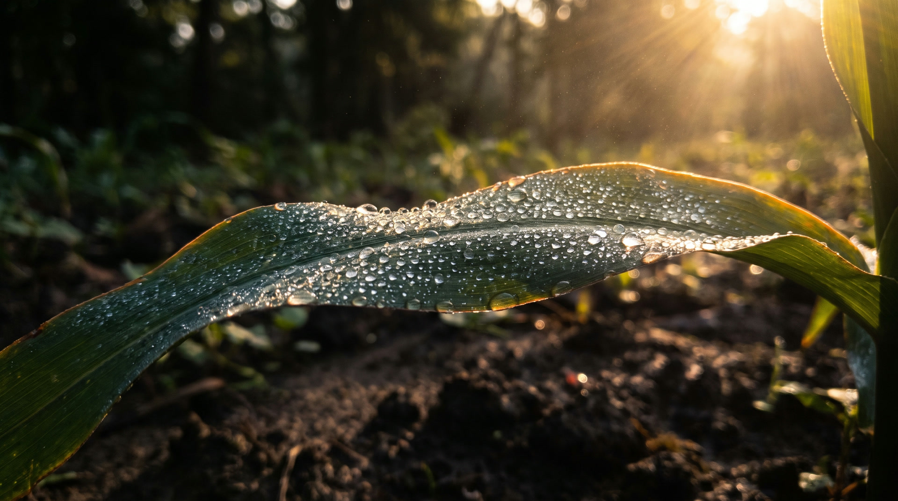
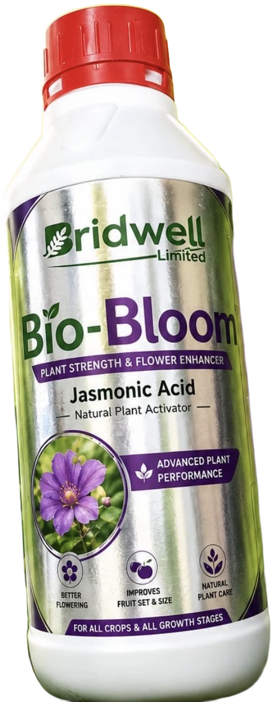
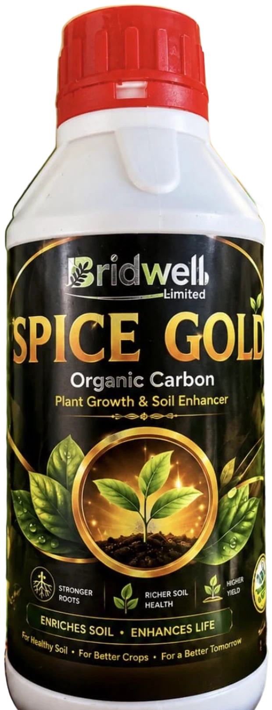
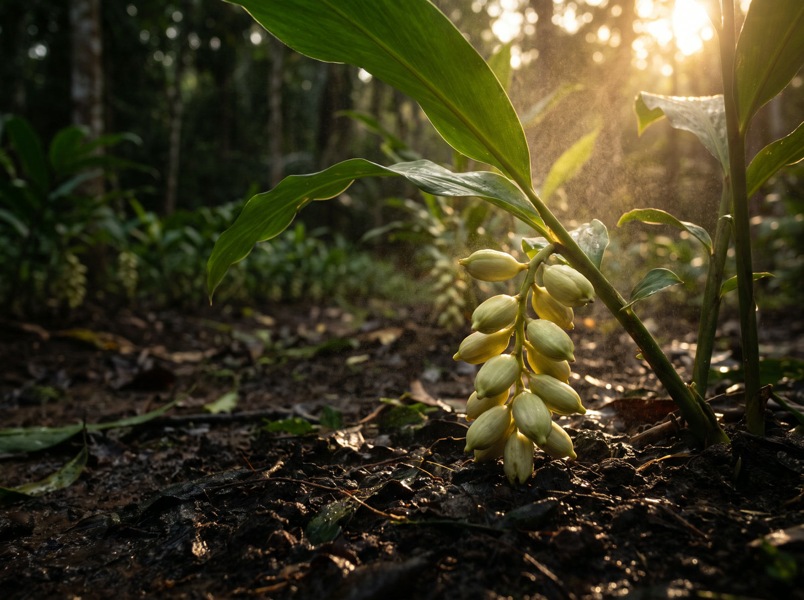

Crop Protection
Pesticides and fungicides that hold their line, so the crop you grew is the crop you harvest.
Crop protection and plant nutrition, made in Kerala since 2022.
Crop protection and plant nutrition, built to reach the place that decides your season.
India's own Soil Health Card testing found close to half of tested samples low in organic carbon, and around two thirds low in nitrogen. That is why the same input gives you less than it did five seasons ago. You are not imagining it, and adding more of the same will not fix it.

Pesticides and fungicides that hold their line, so the crop you grew is the crop you harvest.
Bio-stimulants that push flowering and fruit set when the plant needs the push most.
Organic carbon that feeds the soil itself, so next season starts better than this one.

Plant strength and flower enhancer.
More flowers that hold. Better fruit set, better size. It works with the plant's own signal system rather than forcing it, which is why it is safe across every crop and every growth stage.
Vegetables · Fruits · Field crops · Flowers and ornamentals

Nourishes soil. Boosts life.
Organic carbon is the part of your soil that holds water, holds nutrients, and keeps the microbes alive. When it runs down, everything else you apply works less. Spice Gold puts it back.
Vegetables · Fruits · Spices · Cereals · Flowers
This is the whole idea in one motion. Spraying is easy. Arriving is the hard part.
Somewhere between a quarter and a third of the crop chemicals sold in this country are estimated to be spurious. Most farmers buy on credit, so a fake bottle does not cost you money. It costs you the season. Here is how to check any bottle before you pay for it.
A cap that turns freely before you open it has been opened before.
Printed straight onto the pack, and it matches the carton.
Ours says Bridwell Limited, Koottar, Kerala. A bottle that will not tell you where it came from is telling you something.
The one who takes your call in August is the one worth buying from in June.
Not sure about something you bought? The government runs a free helpline for reporting fake farm inputs.
1800-180-1551Healthy plants. Happy farmer. Better tomorrow.Bridwell Limited, Kerala
Bridwell supplies crop protection, plant nutrition, and soil products as one range, so your counter covers the season instead of one moment in it. Tell us your district and we will talk.

Check the seal, the printed batch code, and the maker's address on the label. All three are on every Bridwell pack. If something looks wrong, call us on the number below before you use it.
Bio-Bloom and Spice Gold are made for all crops and all growth stages. For crop protection, the product depends on the pest and the crop, so tell us what you are growing and what you are fighting.
Usually yes, but run a small jar test first with the exact products you plan to combine. Ask us and we will tell you what we know about your combination.
Bio-Bloom is 2 to 3 ml per litre as a foliar spray, or 250 to 500 ml per acre through the soil. Every pack carries its own dose on the label. Read it before you mix.
Bio-Bloom shows on the flowering and fruit set of the crop you spray it on. Spice Gold works on the soil, so the first season is the smaller half of what it does. The season after is the bigger half.
Bio-Bloom and Spice Gold are natural inputs, safe across crops and growth stages. Crop protection products are chemicals and must be used exactly as the label says, with the protection the label asks for.
Send it and we will reply with what fits your crop, and where to get it near you.
Your message is already typed out. Press send in WhatsApp and it lands with us. If nothing opened, call us on the number below instead.